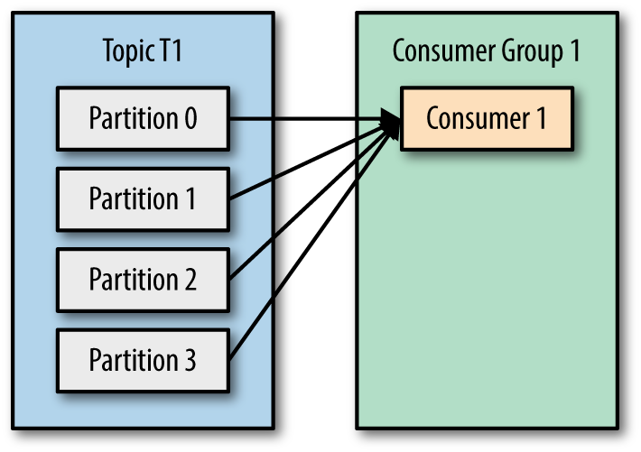

version: '3.7'
services:
zookeeper:
image: confluentinc/cp-zookeeper:5.4.1
ports:
- "2181:2181"
environment:
ZOOKEEPER_CLIENT_PORT: 2181
ZOOKEEPER_TICK_TIME: 2000
kafka:
image: confluentinc/cp-server:5.4.1
depends_on:
- zookeeper
ports:
- "9092:9092"
environment:
KAFKA_BROKER_ID: 1
KAFKA_ZOOKEEPER_CONNECT: 'zookeeper:2181'
KAFKA_LISTENER_SECURITY_PROTOCOL_MAP: PLAINTEXT:PLAINTEXT,PLAINTEXT_HOST:PLAINTEXT
KAFKA_LISTENERS: PLAINTEXT://kafka:9092
KAFKA_ADVERTISED_LISTENERS: PLAINTEXT://kafka:9092
KAFKA_OFFSETS_TOPIC_REPLICATION_FACTOR: 1
KAFKA_CONFLUENT_LICENSE_TOPIC_REPLICATION_FACTOR: 1Kafka – шина, очередь или БД?
Алексей Коняев, akonyaev@croc.ru
1. Как устроена Kafka
Kafka cluster
|
Топики
Определяется именем
Разделен на партиции - "Единица параллелизма" (num.partitions = 1)
Для каждой партиции свой брокер-лидер, остальные In-Sync-Replicas (ISR)
Бинарный файл на брокере (разделен на сегменты, путь к папке задан в log.dirs)
Имеет реплики (replication.factor = 1, рекомендуется >= 3)
Подрезается с конца
по времени жизни (retention.ms = 7 дней)
по размеру (retention.bytes = -1)
Внутри топика сообщения
Бинарные ключ и значение
Offset внутри партиции - порядковый номер
Timestamp - по умолчанию CreateTime (ещё есть LogAppendTime)
Заголовки - список пар ключ-значение (String-byte[])
Producer
Сериализует ключ и значение сообщения
Определяет номер партиции
по умолчанию DefaultPartitioner = hash(key)%num_partitions
можно задать другой (например, RoundRobinPartitioner или свою реализацию)
Ожидает подтверждения записи (acks):
0 - не ждать, будь что будет
1 - брокер-лидер для данного топика подтвердил запись
all - все реплики подтвердили запись
Максимальный размер сообщения по умолчанию 1Mb (message.max.bytes)
можно увеличить, но осторожно!
можно включить сжатие (gzip, snappy, lz4, zstd)
делить на куски или хранить во внешнем хранилище, а в Kafka - ссылки
Использует батчи (batch.size = 16Kb, linger.ms = 0)
Consumer
Десериализует ключ и значение сообщения
Объединяются в группы (group.id)
Потребители из одной группы распределяют партиции между собой
Координация выполняется с помощью "Kafka Rebalance Protocol"
consumer-ы отправляют heartbeat-ы Координатору (один из брокеров)
Rebalance запускается, когда consumer отключился или подключились новые
Группы consumer-ов читают данные из топиков независимо друг от друга
Выполняет Polling сообщений из Кафки
Если poll выполнять редко, то можно нарваться на rebalance
Consumer groups
Consumer groups

Consumer groups

Consumer groups
Кол-во партиций лучше сразу сделать с запасом!

Consumer groups
Очередность получения событий сохраняется
В рамках партиции
Для событий с одинаковым ключом

2. Задачи, в которых применима Kafka
Queue
с одной стороны создают "задания"
с другой - эти задачи нужно выполнять:
в той же последовательности (или нет)
как можно быстрее
при неудачной обработке нужно пропустить, повторить…
Consumer внутри группы читают данные из топика, как из очереди!
Пример: запросы на формирование отчетов в ЦР
Pub-Sub systems (Event sourcing)
Издатели просто публикуют события, для всех
Подписчики - подписываются на интересующие их каналы/топики, возможно, при этом фильтруя события
Consumer Groups читают данные из топика независимо друг от друга!
Пример: в ЦР события перемещения объекта потребляют UI, процессор бизнес-правил и др.
Service Bus
единая точка обмена сообщениями между системами
транзакции, контроль форматов сообщений, их преобразование и сохранность
умная маршрутизация сообщений
Kafka
есть механизм транзакций, который обеспечивает "Exactly Once" семантику
есть различные коннекторы - Kafka Connect
формат сообщений можно регулировать через Schema Registry (by Confluent)
все сообщения надежно хранятся
НО маршрутизацию сообщений нужно программировать самим
Пример: почти все подсистемы ЦР взаимодействуют через Кафку, модуль Нотификаций реализует логику маршрутизации
Stream processing
Обработка потока данных "на лету"
Пример: В ЦР на входе события перемещения метки - на выходе: перемещение объекта, вход/выход из геозоны, нотификации
Database. Stream Table duality
Database. KTable & KeyValueStore
KTable - процессор на Kafka Streams, у которого есть состояние
Данные хранятся в памяти + сохраняются на диск в RocksDB
Бекап - в compacted-топиках
KSqlDB - надстройка над Kafka Streams (by Confluent)
Пример: Объекты в геозонах, статус online/offline
Database. GlobalKTable
KTable - партиционируется, GlobalKTable - нет
 |  |
Database. Interactive Queries
Механизм доступа к State-у из вне
3. Поднимаем локально
 |
Поднимаем в Docker
docker-compose.yaml
Консольные утилиты
Список топиков
$ kafka-topics --zookeeper zookeeper:2181 --list
$ kafkacat -b kafka:9092 -LПубликация сообщений
$ kafka-console-producer --broker-list kafka:9092 --topic my_topic
--property "parse.key=true" --property "key.separator=\t" < my_file.txt
$ kafkacat -b kafka:9092 -t my_topic -P -K\t
$ kafkacat -b kafka:9092 -t my_topic -P -K\t -l my_file.txtЧтение сообщений
$ kafka-console-consumer --bootstrap-server kafka:9092 --topic my_topic
--property print.key=true --property print.value=true
$ kafkacat -b kafka:9092 -t my_topic -C -o end -K\t
$ kafkacat -b kafka:9092 -t my_topic -C -o beginning -c 10Conductor.io
4. Kafka API
Producer / Consumer
Apache Kafka Java libraries
librdkafka (C/C++)
confluent-kafka-go / dotnet / python
Kafka Streams
Kafka Connect
KSqlDB (by Confluent)
Идем смотреть код!
Producer
Properties props = new Properties();
props.put(ProducerConfig.BOOTSTRAP_SERVERS_CONFIG, "localhost:9092");
props.put(ProducerConfig.KEY_SERIALIZER_CLASS_CONFIG, StringSerializer.class.getName());
props.put(ProducerConfig.VALUE_SERIALIZER_CLASS_CONFIG, StringSerializer.class.getName());
Producer<String, String> producer = new KafkaProducer<>(props);
while (!stop) {
var future = producer.send(record);
...
}
producer.close();Consumer
Properties props = new Properties();
props.put(ConsumerConfig.BOOTSTRAP_SERVERS_CONFIG, "localhost:9092");
props.put(ConsumerConfig.GROUP_ID_CONFIG, "my-consumer");
props.put(ConsumerConfig.KEY_DESERIALIZER_CLASS_CONFIG, StringDeserializer.class.getName());
props.put(ConsumerConfig.VALUE_DESERIALIZER_CLASS_CONFIG, StringDeserializer.class.getName());
KafkaConsumer<String, String> consumer = new KafkaConsumer<>(props);
consumer.subscribe(Collections.singleton("my-topic"));
while (!stop) {
for (ConsumerRecord<String, String> record : consumer.poll(Duration.ofSeconds(1))) {
...
}
}
consumer.close();Spring Producer
application.yml
spring.kafka:
bootstrap-servers: localhost:9092.Producer.java
@Bean
public KafkaTemplate<String, Event> kafkaTemplate(
ProducerFactory<String, Event> factory, ObjectMapper objectMapper) {
var defaultFactory = (DefaultKafkaProducerFactory<String, Event>) factory;
defaultFactory.setKeySerializer(new StringSerializer());
defaultFactory.setValueSerializer(new JsonSerializer<>(objectMapper));
return new KafkaTemplate<>(factory);
}
void run() {
...
kafkaTemplate.send(topic, eventKey, event);
}Spring Consumer
@KafkaListener(id = "myConsumerGroup", topics = "myTopic")
public void listen(String message) {
...
}
@KafkaListener(id = "pollResults", topics = "myTopic", containerFactory = "myFactory")
public void pollResults(ConsumerRecords<?, ?> records) {
...
}
@KafkaListener(id = "listMsgAckConsumer", topics = "myTopic", containerFactory = "myFactory")
void listenWithManualCommits(List<Message<?>> list, Acknowledgment ack, Consumer<?, ?> consumer) {
...
ack.acknowledge();
}Тестирование
Собирать и запускать тесты в докере, поднимая в соседнем контейнере кафку
org.springframework.kafka.test.EmbeddedKafkaBroker
org.testcontainers.containers.KafkaContainer
TopologyTestDriver - тестирование Kafka Streams приложений
ksql-test-runner - тестирование KSqlDB приложений
Ссылки
Документация
Исходники примеров - https://github.com/a-konyaev/kafka-blocks
Телеграм - http://t.me/proKafka